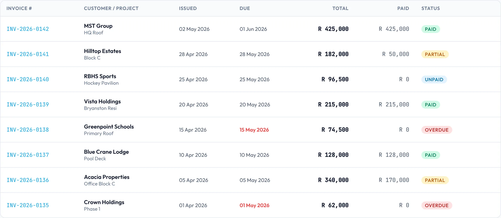
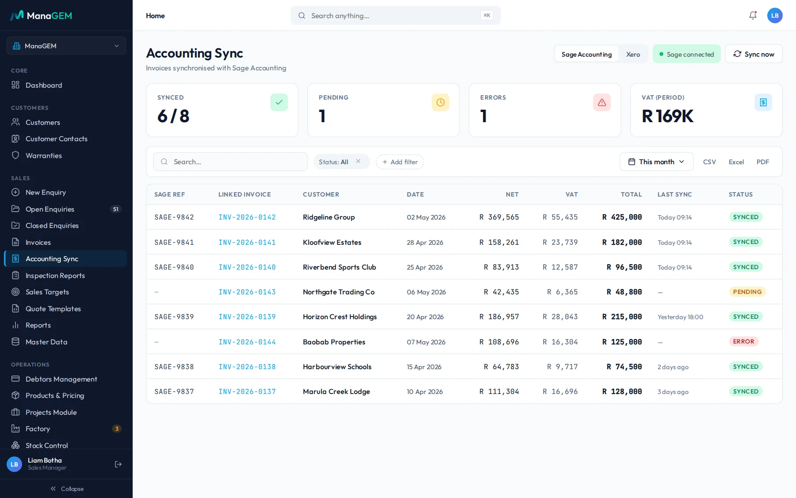

Give Your Clients Better Control of Their Business Operations.
ManaGEM helps businesses manage enquiries, quotes, jobs and invoices in one connected workflow, making it easier to organise the operational information behind their day-to-day work.
Explore how ManaGEM can fit alongside your clients’ existing accounting processes.
- 1Enquiry

- 2Quote

- 3Job

- 4Invoice

Better Bookkeeping Starts With Better-Organised Business Records.
Accounting professionals often depend on clients to provide clear and consistent information about the work their businesses perform. When quotes, job details and invoices are scattered across spreadsheets, messages and separate systems, assembling that information can become unnecessarily difficult.
Some of the challenges this can create:
Scattered information
Job details and customer information are spread across different tools.
Unclear job records
It can be difficult to trace the relationship between work requested, work completed and the resulting invoice.
Inconsistent documentation
Information may arrive incomplete or require clarification before it can be used.
Manual follow-ups
Business owners and their accounting teams may spend time requesting updates and missing details.
Connect the Work Behind the Numbers.
ManaGEM manages the operational workflow behind a business’s enquiries, quotes, jobs and invoices. By keeping relevant information organised within the business management process, it can support a more structured approach to preparing and sharing operational records.
- 01
Enquiries and customers
Keep track of incoming work and the customer information associated with it.
- 02
Quotes and jobs
Connect quotations to the jobs they relate to. An accepted quote becomes the job, on the same record.
- 03
Invoices and records
Help businesses manage invoices within their operational workflow, from deposit to final payment.
- 04
Operational visibility
Give teams a clearer view of the work being managed through ManaGEM.
See each part in detail: sales pipeline, quotes and pricing, jobs and bookings and invoicing, debtors and accounting sync.
Your Operational Workflow. Your Accounting Software. A Clearer Connection.
ManaGEM manages operational workflows, while accounting software supports the accounting processes performed by the business and its accounting professionals. Where the relevant integration is supported, the systems can work together as part of a more connected process.
-
1
Manage the work in ManaGEM
Enquiries, quotes, jobs and invoices are managed in ManaGEM, on one record per job.
- Enquiries and customers
- Quotes from the business’s own price list, with VAT
- Jobs, bookings and progress
- Invoices, payments and debtors
-
2
Connect the relevant information
Sage AccountingAvailable
- Invoices raised in ManaGEM post to Sage Accounting with their net amount, VAT and total, and a Sage reference.
- Each invoice shows its sync status (synced, pending or error) and when it last synced. The team can also run Sync now.
- Products can be synced with Sage.
XeroAvailable
- Invoices raised in ManaGEM post to Xero with their net amount, VAT and total, and a Xero reference.
- The same sync status, last sync time and Sync now action.
- Products can be synced with Xero.
Ask us how your client’s Sage or Xero setup connects before you start.
-
3
Continue the accounting process
The accountant or bookkeeper works with those invoices in Sage Accounting or Xero as they do today. The ledger, bank reconciliation, month end and tax stay in the accounting software.
ManaGEM does not replace the accounting platform, and it does not handle bank feeds or financial statements.

Less Chasing. Clearer Context. Better-Organised Client Information.
A clearer view of operational records
Understand the relationship between the client’s enquiries, quotes, jobs and invoices, because they sit on one record per job.
More structured information handoffs
Help clients organise relevant operational details before sharing them with their accounting professionals.
Better visibility into client workflows
Understand how work moves through the client’s business, and where operational information originates.
A more connected business process
Explore how operational management and accounting software can work together within the client’s existing setup.
Is ManaGEM Right for Your Clients?
Bookkeepers and accounting practices
For professionals supporting clients who need more structure around their operational workflows and records.
Read the questions accountants askService-based and project-driven businesses
For businesses managing customer enquiries, quotations, jobs and invoices.
See the industries ManaGEM is built forGrowing small and medium-sized businesses
For organisations that have outgrown disconnected spreadsheets and informal processes and need a more structured way to manage their work.
Moving off spreadsheets
Suitability depends on each client’s workflow, requirements and existing software. We can look at a client’s setup with you before anyone commits.
From Enquiry to Invoice: Follow the Operational Trail.
A waterproofing contractor takes one job from first call to the invoice in Sage or Xero.
Steps vary by business and setup, and not every step is automatic.
- 01A customer enquiry is recordedKloofview Estates asks for a roof to be waterproofed. The enquiry is logged with the customer, site and scope, and the preferred dates.
- 02A quotation is preparedThe quote is built from the business’s own price list, with VAT added, and sent to the customer as a PDF.
- 03The work becomes a managed jobThe accepted quote becomes the job, Kloofview Estates Block C, with a foreman and start and end dates.
- 04Relevant job information is maintainedBookings, stock dispatched to site and progress are recorded against the same job.
- 05An invoice is createdInvoice INV-2026-0141 is raised from the job: R 158,261 net, R 23,739 VAT, R 182,000 total.
- 06The invoice reaches the accounting processThe invoice posts to the business’s accounting software, Sage Accounting or Xero, with its reference, and shows as synced in ManaGEM.
Frequently Asked Questions
01Is ManaGEM accounting software?
No. ManaGEM focuses on business operations, including the management of enquiries, quotes, jobs and invoices. Its role is to support the operational workflow rather than replace dedicated accounting software.
02Can ManaGEM work with Sage or Xero?
Yes. ManaGEM syncs with Sage Accounting and Xero: invoices post with their net amount, VAT, total and a reference from the accounting software, and products can be synced. Ask us how your client’s setup connects. If a client uses another platform, talk to us.
03Does ManaGEM automatically synchronise invoices and transactions?
Invoices raised in ManaGEM post to Sage Accounting or Xero. Each invoice shows whether it has synced, is pending or has an error, and when it last synced, and the team can run Sync now from the Accounting Sync screen. ManaGEM does not sync bank transactions. How the sync is set up for a client is something we confirm with you.
04Will ManaGEM replace our bookkeeping software?
No. ManaGEM is intended to support business operations alongside the appropriate accounting tools. The ledger and the accounting work stay in the accounting platform.
05Is ManaGEM suitable for all my clients?
Not necessarily. Suitability depends on the client’s operational requirements, industry, workflow and existing software. It suits businesses that manage enquiries, quotes, jobs and invoices.
06Can I see how ManaGEM would work for one of my clients?
Yes. Book a demonstration and tell us about the client’s operational requirements, and we will walk you through it.
Let’s Explore a Better-Connected Workflow for Your Clients.
Tell us how your clients manage enquiries, quotes, jobs and invoices today. The GEMIS team can help you explore whether ManaGEM fits their operational needs and existing accounting setup.